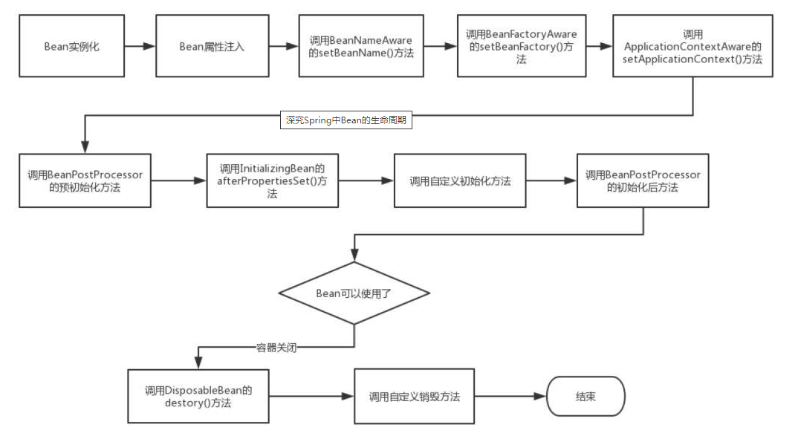

Bean的生命周期
前言
在我们没有使用Spring框架之前，创建对象一般都是使用new关键字进行创建，当然除了new关键字外，还有
- 运用反射手段，使用Class类的newInstance方法 或者 Constructor类中的newInstance方法
- 使用clone方法
- 使用反序列化（ObjectInputStream）
一旦对象不再被使用的时候，将有可能被JVM垃圾回收器进行回收。
但是在Spring通过IOC容器进行管理之后，Bean 的生命周期就变得更加复杂了，下图展示了Bean的构造过程

Bean的生命周期
我们对上图的每个步骤进行文字说明
- Spring启动，查找并加载需要被Spring管理的bean，进行Bean的实例化
- Bean实例化后对将Bean的引入和值注入到Bean的属性中
- 如果Bean实现了BeanNameAware接口的话，Spring将Bean的Id传递给setBeanName()方法
- 如果Bean实现了BeanFactoryAware接口的话，Spring将调用setBeanFactory()方法，将BeanFactory容器实例传入
- 如果Bean实现了ApplicationContextAware接口的话，Spring将调用Bean的setApplicationContext()方法，将bean所在应用上下文引用传入进来。
- 如果Bean实现了BeanPostProcessor接口，Spring就将调用他们的postProcessBeforeInitialization()方法。
- 如果Bean 实现了InitializingBean接口，Spring将调用他们的afterPropertiesSet()方法。类似的，如果bean使用init-method声明了初始化方法，该方法也会被调用
- 如果Bean 实现了BeanPostProcessor接口，Spring就将调用他们的postProcessAfterInitialization()方法。
- 此时，Bean已经准备就绪，可以被应用程序使用了。他们将一直驻留在应用上下文中，直到应用上下文被销毁。
- 如果bean实现了DisposableBean接口，Spring将调用它的destory()接口方法，同样，如果bean使用了destory-method 声明销毁方法，该方法也会被调用。
接口方法的分类
Bean的完整生命周期经历了各种方法的调用，这些方法可以分类一下三类
Bean自身的方法：
这个包括了Bean本身调用的方法和通过配置文件中的init-method和destroy-method指定的方法
Bean级生命周期的方法
这个包括了BeanNameAware、BeanFactoryAware、InitializingBean和DiposableBean这些接口的方法
容器级生命周期的方法
这个包括了InstantiationAwareBeanPostProcessor 和 BeanPostProcessor 这两个接口实现，一般称它们的实现类为“后处理器”。
工程后处理器接口方法
这个包括了AspectJWeavingEnabler, ConfigurationClassPostProcessor, CustomAutowireConfigurer等等非常有用的工厂后处理器 接口的方法。工厂后处理器也是容器级的。在应用上下文装配配置文件之后立即调用。
DEMO举例
我们用一个简单的Spring Bean来演示一下Spring Bean的生命周期。
首先是一个简单的Spring Bean，调用Bean自身的方法和Bean级生命周期接口方法，为了方便演示，它实现了BeanNameAware、BeanFactoryAware、InitializingBean和DiposableBean这4个接口，同时有2个方法，对应配置文件中的init-method和destroy-method。如下：
1
2
3
4
5
6
7
8
9
10
11
12
13
14
15
16
17
18
19
20
21
22
23
24
25
26
27
28
29
30
31
32
33
34
35
36
37
38
39
40
41
42
43
44
45
46
47
48
49
50
51
52
53
54
55
56
57
58
59
60
61
62
63
64
65
66
67
68
69
70
71
72
73
74
75
76
77
78
79
80
81
82
83
84
85
86
87
88
89
90
91
92
93
94
| package springBeanTest;
import org.springframework.beans.BeansException;
import org.springframework.beans.factory.BeanFactory;
import org.springframework.beans.factory.BeanFactoryAware;
import org.springframework.beans.factory.BeanNameAware;
import org.springframework.beans.factory.DisposableBean;
import org.springframework.beans.factory.InitializingBean;
public class Person implements BeanFactoryAware, BeanNameAware,
InitializingBean, DisposableBean {
private String name;
private String address;
private int phone;
private BeanFactory beanFactory;
private String beanName;
public Person() {
System.out.println("【构造器】调用Person的构造器实例化");
}
public String getName() {
return name;
}
public void setName(String name) {
System.out.println("【注入属性】注入属性name");
this.name = name;
}
public String getAddress() {
return address;
}
public void setAddress(String address) {
System.out.println("【注入属性】注入属性address");
this.address = address;
}
public int getPhone() {
return phone;
}
public void setPhone(int phone) {
System.out.println("【注入属性】注入属性phone");
this.phone = phone;
}
@Override
public String toString() {
return "Person [address=" + address + ", name=" + name + ", phone="
+ phone + "]";
}
// 这是BeanFactoryAware接口方法
@Override
public void setBeanFactory(BeanFactory arg0) throws BeansException {
System.out
.println("【BeanFactoryAware接口】调用BeanFactoryAware.setBeanFactory()");
this.beanFactory = arg0;
}
// 这是BeanNameAware接口方法
@Override
public void setBeanName(String arg0) {
System.out.println("【BeanNameAware接口】调用BeanNameAware.setBeanName()");
this.beanName = arg0;
}
// 这是InitializingBean接口方法
@Override
public void afterPropertiesSet() throws Exception {
System.out
.println("【InitializingBean接口】调用InitializingBean.afterPropertiesSet()");
}
// 这是DiposibleBean接口方法
@Override
public void destroy() throws Exception {
System.out.println("【DiposibleBean接口】调用DiposibleBean.destory()");
}
// 通过<bean>的init-method属性指定的初始化方法
public void myInit() {
System.out.println("【init-method】调用<bean>的init-method属性指定的初始化方法");
}
// 通过<bean>的destroy-method属性指定的初始化方法
public void myDestory() {
System.out.println("【destroy-method】调用<bean>的destroy-method属性指定的初始化方法");
}
}
|
接下来是演示BeanPostProcessor接口的方法，如下：
1
2
3
4
5
6
7
8
9
10
11
12
13
14
15
16
17
18
19
20
21
22
23
24
25
26
27
28
29
| package springBeanTest;
import org.springframework.beans.BeansException;
import org.springframework.beans.factory.config.BeanPostProcessor;
public class MyBeanPostProcessor implements BeanPostProcessor {
public MyBeanPostProcessor() {
super();
System.out.println("这是BeanPostProcessor实现类构造器！！");
// TODO Auto-generated constructor stub
}
@Override
public Object postProcessAfterInitialization(Object arg0, String arg1)
throws BeansException {
System.out
.println("BeanPostProcessor接口方法postProcessAfterInitialization对属性进行更改！");
return arg0;
}
@Override
public Object postProcessBeforeInitialization(Object arg0, String arg1)
throws BeansException {
System.out
.println("BeanPostProcessor接口方法postProcessBeforeInitialization对属性进行更改！");
return arg0;
}
}
|
如上，BeanPostProcessor接口包括2个方法postProcessAfterInitialization和postProcessBeforeInitialization，这两个方法的第一个参数都是要处理的Bean对象，第二个参数都是Bean的name。返回值也都是要处理的Bean对象。这里要注意。
InstantiationAwareBeanPostProcessor 接口本质是BeanPostProcessor的子接口，一般我们继承Spring为其提供的适配器类InstantiationAwareBeanPostProcessor Adapter来使用它，如下：
1
2
3
4
5
6
7
8
9
10
11
12
13
14
15
16
17
18
19
20
21
22
23
24
25
26
27
28
29
30
31
32
33
34
35
36
37
38
39
40
41
42
43
44
45
| package springBeanTest;
import java.beans.PropertyDescriptor;
import org.springframework.beans.BeansException;
import org.springframework.beans.PropertyValues;
import org.springframework.beans.factory.config.InstantiationAwareBeanPostProcessorAdapter;
public class MyInstantiationAwareBeanPostProcessor extends
InstantiationAwareBeanPostProcessorAdapter {
public MyInstantiationAwareBeanPostProcessor() {
super();
System.out
.println("这是InstantiationAwareBeanPostProcessorAdapter实现类构造器！！");
}
// 接口方法、实例化Bean之前调用
@Override
public Object postProcessBeforeInstantiation(Class beanClass,
String beanName) throws BeansException {
System.out
.println("InstantiationAwareBeanPostProcessor调用postProcessBeforeInstantiation方法");
return null;
}
// 接口方法、实例化Bean之后调用
@Override
public Object postProcessAfterInitialization(Object bean, String beanName)
throws BeansException {
System.out
.println("InstantiationAwareBeanPostProcessor调用postProcessAfterInitialization方法");
return bean;
}
// 接口方法、设置某个属性时调用
@Override
public PropertyValues postProcessPropertyValues(PropertyValues pvs,
PropertyDescriptor[] pds, Object bean, String beanName)
throws BeansException {
System.out
.println("InstantiationAwareBeanPostProcessor调用postProcessPropertyValues方法");
return pvs;
}
}
|